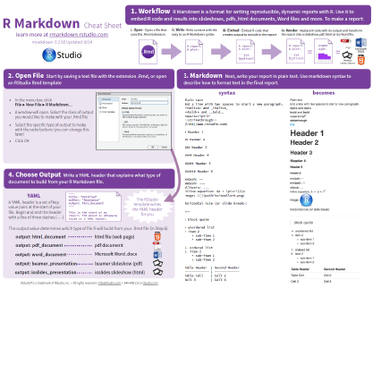
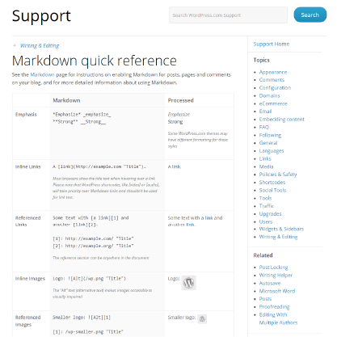
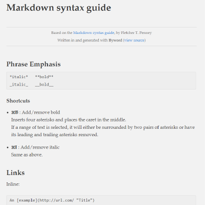
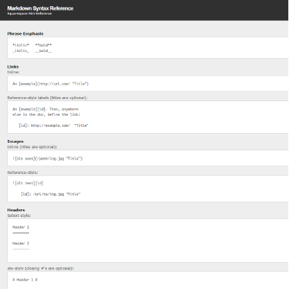
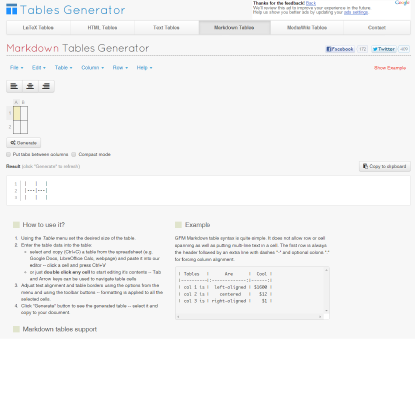

week 2
NOTICE: page under construction. Stable version will be published by January 13, 2015 edit page
Admission requirements What you need to read before coming to class on Tuesday
Chapter: 2 - Between-Person Analysis and Interpretation of Interactions
Lecture: Interpreting General Linear Models slides | watch | download
Plan for the week
Week at a glance
Tuesday
Between-Person Analsyis and Interactions in GLM
Friday
Basic reports in markdown
Homework
Due Friday, 23:59
Learning objectives: Concepts
Basic
- simple effect
- main effect
- contrast
- interaction
Intermediate
- General Linear Model
- use of dummy variables
Advanced
- Three-way interactions
Learning objectives: Skills
Basic
- load data
- basic file types in MPlus
- reading the output
Intermediate
- re-center a continuous predictor
- write dummy variable
Advanced
- plot interactions
Tuesay session
Mplus & Centering
Extra credit
You can earn extra credit by researching and sharing online resources that could be of use in preparing this week’s report. This week’s theme : online resources for learning markdown. Vote only if you find this resource useful
Non-competitive EC
- post as a reply to “EXTRA CREDIT” comment thread at the bottom of this page
- get 1 point if posted before 23:59 Friday
Competitive EC
- best 5 posts (measured by the end of the lab on Friday) get another 1 EC points
Report due
Assignment Summarize the first two chapters in a markdown report. Use this cheatsheet to ensure that your report contains at least:
- 3 different headings
- 1 ordered list
- 1 unordered list
- 1 definition list
- 3 kinds of emphasis
- 1 link to a webpage
- 1 image call
- 2 tables
NOTE: You will not be graded on the content, but be prepare to discuss your work with the class.
Markdown Resourses
| Screenshot | Links & Descriptions |
|---|---|
 |
1 Markdwon Tutorial by Garen Torikian |
 |
2 Markdown Cheatsheet by Adam Pritchard |
 |
3 Markdown Syntax Cheat Sheet by Mark Boszko |
|  | 4 The R Markdown Cheat sheet for dynamic reporting in RStudio by RStudio Blog |
|  | 5 Markdown quick reference from Wordpress |
 |
6 Video tutorial by Stevan Wing |
|  | 7 Markdown syntax guide by Fletcher T. Penney |
|  | 8 Markdown syntax reference by Squarespace |
|  | 9 Markdown table generator by Table Generator |